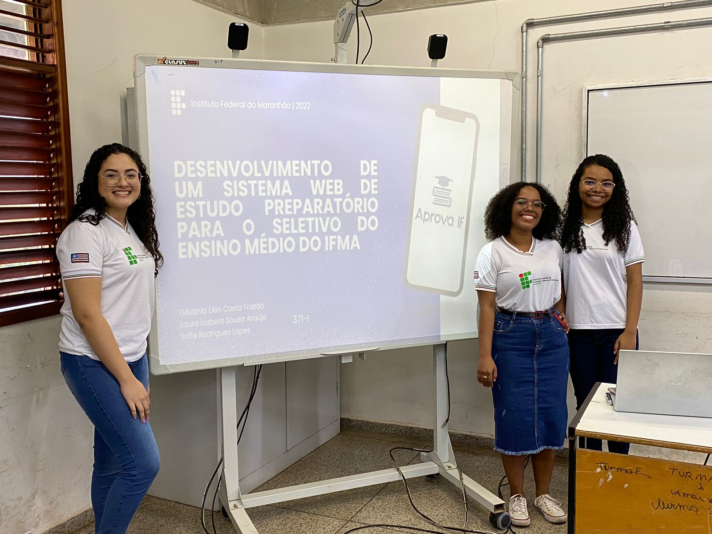

15 de Dezembro de 2022
Curso técnico de Informática

Durate os anos de 2020 até 2022, fui estudante do curso técnico de informática integrado com o ensino médio
no Instituto Federal do Maranhão (IFMA) - Campus Imperatriz. Foram 3 anos de muito aprendizado e descobrimentos, entre esses,
o descobrimento da minha paixão pela tecnologia, desde então todos as minhas decisões foram tomadas para seguir meu sonho.
15 de Dezembro de 2022
Curso técnico de Informática
At vero eos et accusamus et iusto odio dignissimos ducimus qui
blanditiis praesentium voluptatum deleniti atque corrupti quos dolores
et quas molestias excepturi sint occaecati cupiditate non provident,
similique...